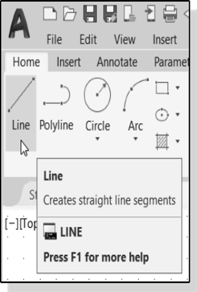
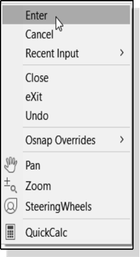

CAD Design
An introduction to AutoCad
Introduction
Learning to use a CAD system is similar to learning a new language. It is necessary to begin with the basic alphabet and learn how to use it correctly and effectively through practice. This will require learning some new concepts and skills as well as learning a different vocabulary. Today, the majority of the Mechanical CAD systems are capable of creating three-dimensional solid models. Nonetheless, all CAD systems create designs using basic geometric entities, and many of the constructions used in technical designs are based upon two-dimensional planar geometry. The method and number of operations that are required to accomplish the basic planar constructions are different from one system to another.In order to become effective and efficient in using a CAD system, we must learn to create geometric entities quickly and accurately. In learning to use a CAD system, lines and circles are the first two, and perhaps the most important two, geometric entities that one should master the skills of creating and modifying. Straight lines and circles are used in almost all technical designs. In examining the different types of planar geometric entities, the importance of lines and circles becomes obvious. Triangles and polygons are planar figures bounded by straight lines. Ellipses and splines can be constructed by connecting arcs with different radii. As one gains some experience in creating lines and circles, similar procedures can be applied to create other geometric entities. In this tutorial, the different ways of creating lines and circles in AutoCAD 2021 are examined.
Starting Up AutoCAD
1. Select the AutoCAD option on the Program menu or select the AutoCAD icon on the Desktop.
Click Start Drawing to start a new drawing.
Once the program is loaded into memory, the AutoCAD main drawing screen will appear on the screen.
Note that AutoCAD automatically assigns generic names, Drawing X, as new drawings are created. In our example, AutoCAD opened the graphics window using the default system units and assigned the drawing name Drawing1.

1. If necessary, click on the down-arrow in the Quick Access bar and select Show Menu Bar to display the AutoCAD Menu Bar. The Menu Bar provides access to all AutoCAD commands.
2. To switch on the AutoCAD Coordinates Display, use the Customization option at the bottom right corner.
Drawing Units Setup
Every object we construct in a CAD system is measured in units. We should determine the system of units within the CAD system before creating the first geometric entities.
1. In the Menu Bar select:
[Format] --> [Units]
The AutoCAD Menu Bar contains multiple pull- down menus where all of the AutoCAD commands can be accessed. Note that many of the menu items listed in the pull-down menus can also be accessed through the Quick Access toolbar and/or Ribbon panels.
2. Click on the Length Type option to display the different types of length units available. Confirm the Length Type is set to Decimal.
3. Also note the Insertion Scale section will show the default measurement system, such as the English units, inches.
4. Set the Precision to two digits after the decimal point as shown in the above figure.
Pick OK to exit the Drawing Units dialog box.
Drawing Area Setup
Next, we will set up the Drawing Limits by entering a command in the command prompt area. Setting the Drawing Limits controls the extents of the display of the grid. It also serves as a visual reference that marks the working area. It can also be used to prevent construction outside the grid limits and as a plot option that defines an area to be plotted and/or printed. Note that this setting does not limit the region for geometry construction.
3. In the command prompt area, the message “Specify upper right corner <12.00,9.00>:” is displayed. Press the ENTER key again to accept the default coordinates <12.00,9.00>.

Drawing Lines with the Line Command
1. Move the graphics cursor to the first icon in the Draw panel. This icon is the Line icon. Note that a brief description of the Line command appears next to the cursor.

2. Select the icon by clicking once with the left- mouse-button, which will activate the Line command.
3. In the command prompt area, near the bottom of the AutoCAD drawing screen, the message “_line Specify first point:” is displayed. AutoCAD expects us to identify the starting location of a straight line. Move the graphics cursor inside the graphics window and watch the display of the coordinates of the graphics cursor at the bottom of the AutoCAD drawing screen.
The three numbers represent the location of the cursor in the X, Y, and Z directions. We can treat the graphics window as if it was a piece of paper, and we are using the graphics cursor as if it was a pencil with which to draw.
We will create a freehand sketch of a five- point star using the Line command. Do not be overly concerned with the actual size or accuracy of your freehand sketch. This exercise is to give you a feel for the AutoCAD user interface.
1. We will start at a location about one-third from the bottom of the graphics window. Left-click once to position the starting point of our first line. This will be point 1 of our sketch. Next, move the cursor upward and toward the right side of point
2. Notice the rubber-band line that follows the graphics cursor in the graphics window. Left-click again (point 2) and we have created the first line of our sketch.
3. Move the cursor to the left of point 2 and create a horizontal line about the same length as the first line on the screen.

4. Repeat the above steps and complete the freehand sketch by adding three more lines (from point 3 to point 4, point 4 to point 5, and then connect to point 5 back to point 1).
5. Notice that the Line command remains activated even after we connected the last segment of the line to the starting point (point 1) of our sketch. Inside the graphics window, click once with the right-mouse-button and a pop-up menu appears on the screen.
6. Select Enter with the left-mouse-button to end the Line command. (This is equivalent to hitting the [ENTER] key on the keyboard.)
7. Select Enter with the left-mouse-button to end the Line command. (This is equivalent to hitting the [ENTER] key on the keyboard.)